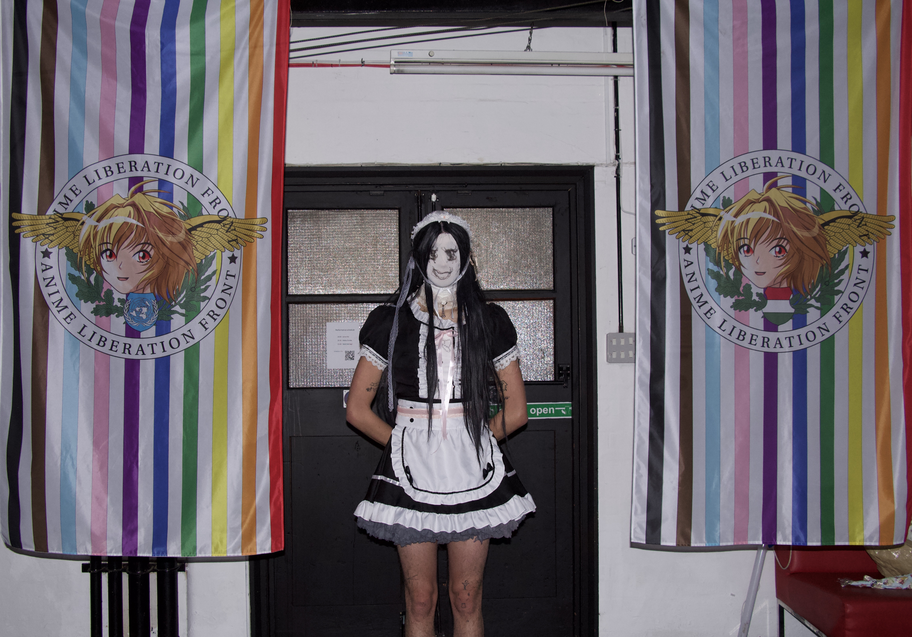
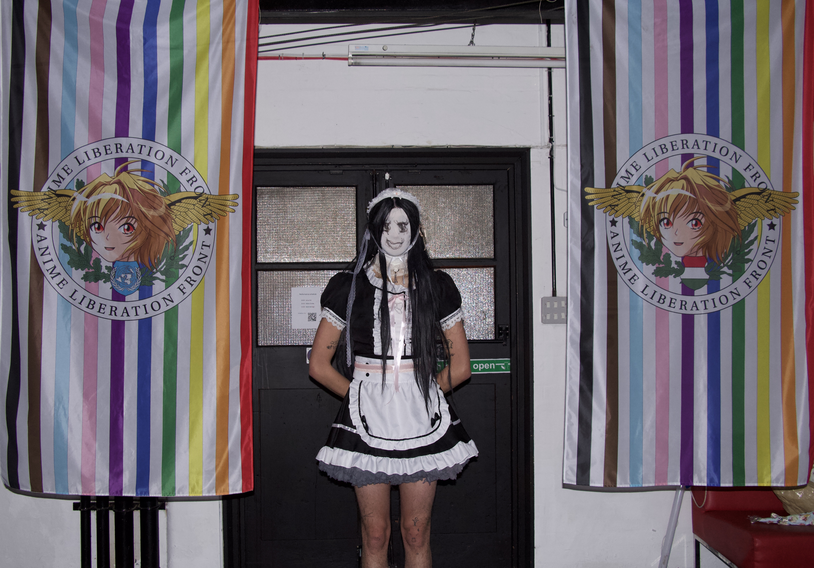

ArtSect Gallery, London | 17-19 November
Digital Daydream is a multidisciplinary exhibition that focuses on Anime and Gaming culture, dissecting subjects into environmental elements and investigating the culture as a new habitat. Each work represents a way people form a relationship with the digital, and in some cases the relationship becomes intimate.
The language of this exhibition is based on internet culture and the obsession with fictional objects. Terminologies such as Otaku, incels, e-girls and Waifu derive from this environment. A paragraph from Volker Grassmuch’s I’m Alone, But Not Lonely described Otaku as:
'... teens or tweens. Mostly boys. They usually wear jeans, T-shirt and sneakers, which might not sound very characteristic, but in fashion-crazy Japan it is. They despise physical contact and love media, technical communication, and the realm of reproduction and simulation in general. They are enthusiastic collectors and manipulators of useless artefacts and information. They are underground, but they are not opposed to the system. They change, manipulate, and subvert ready-made products, but at the same time they are the apotheosis of consumerism and an ideal workforce for contemporary Japanese capitalism. They are the children of the media.'
This exhibition would like to portray an environment from this quote and present all its relative phenomena through unfiltered sharing. With subcultures thriving more than ever before from internet development, will they merge into a hybrid data environment; or form a world of extreme isolation through our endless search for the new niche?


 

Aleksy Domke (Netherlands) / Arjan Guerrero / Audrey Lung / Babak Ahteshamipour (Greece) / Catherine Spet (United States) / Daniel Borrow / David Varhegyi / George Micah Kuhn / SongXin Xin / Gil Altarace Sherman / Hollis Hui / Jaemin Paek / Janice Kei / Bijou Gregory / Jaye Ink / Laurie Martin / Lina Deng / Nikita Snegirjov / Reuben Brown / Romane Courdacher / Roxane Seckauer (Austria) / Jakob Draz (Austria) / Oskaer Pollak (Austria) / Sam Stewart / Tom McVeigh